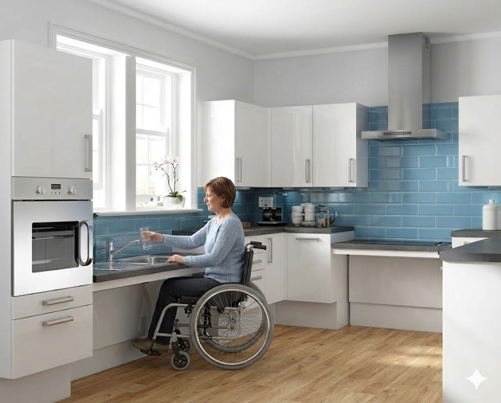
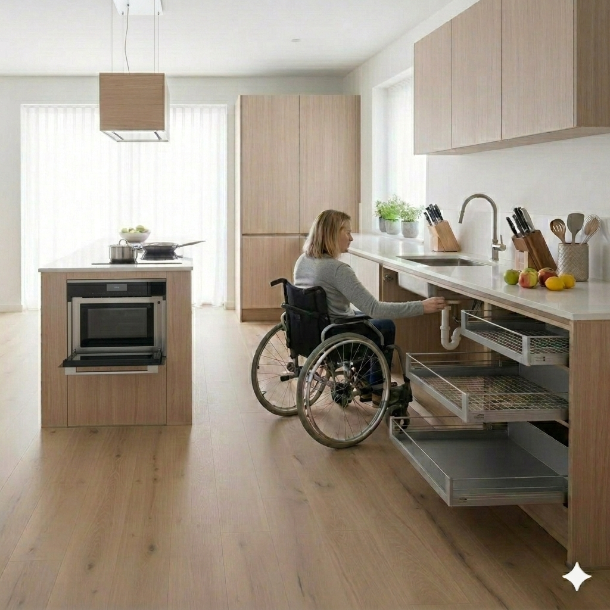
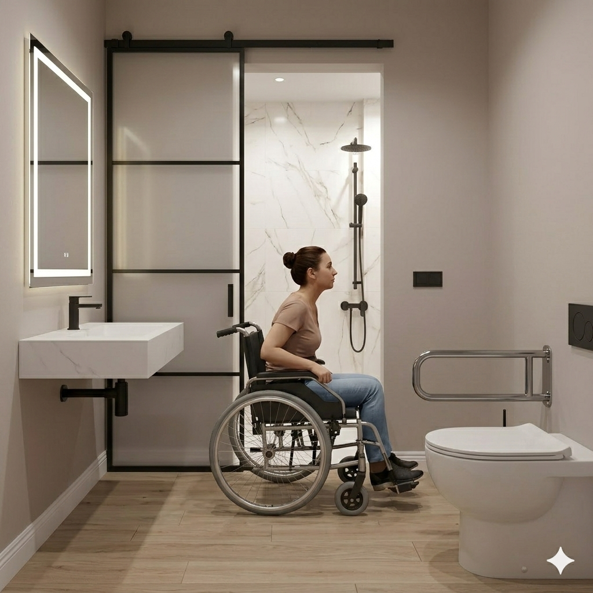
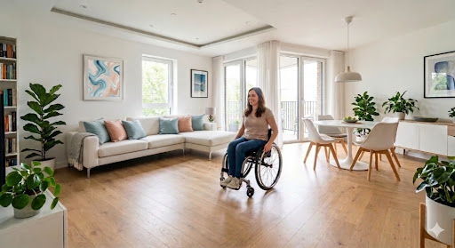
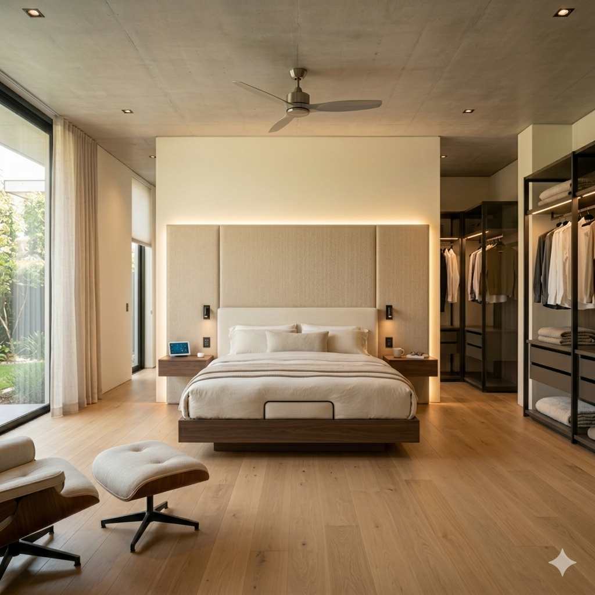
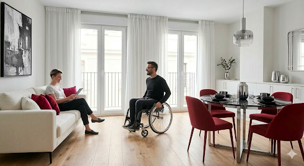
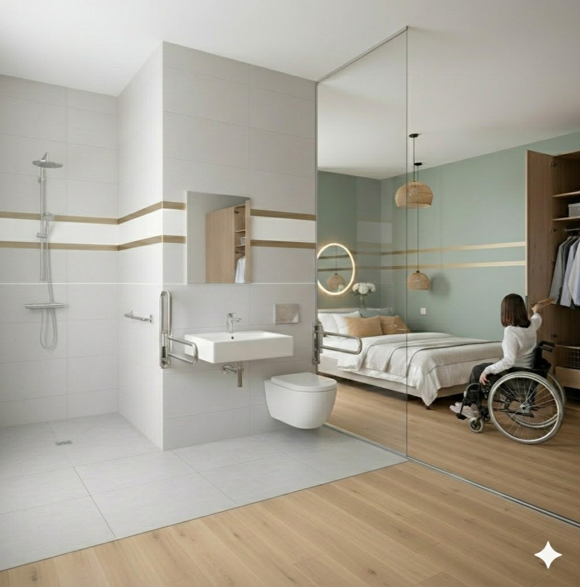

Espaços sem
Barreiras
"Transformar o lugar para libertar a vida."
Design Inclusivo como Padrão de Luxo.
Olá, sou a Cristiana Azevedo. Acredito que o design de uma casa só é verdadeiramente bom quando não deixa ninguém de fora.
No projeto Espaços sem Barreiras, traduzimos a legislação para o mundo do design, mostrando que a acessibilidade é, acima de tudo, a forma mais elevada de conforto. Uma casa adaptada deve ser uma casa de revista: sofisticada, luminosa e profundamente acolhedora.
.png)
Onde a Técnica encontra
o Luxo Sensorial.
I. Luz & Conectividade
Criamos espaços onde a tecnologia, os contrastes cromáticos e a iluminação se fundem para garantir autonomia total.
LEDs CCT e contrastes (Preto/Branco) para orientação visual e redução do esforço.
Domótica para controlo de vãos e temperatura, eliminando barreiras físicas silenciosas.
.png)

II. Cozinha & Detalhe
A parede técnica atrás da banca não é apenas decorativa: é uma barreira higiénica essencial para quem cozinha sentado, garantindo independência e facilidade de manutenção.
- • Design Estético: O backsplash define o caráter visual enquanto cumpre a sua função técnica de impermeabilidade.
III. Banho & Segurança
Eliminamos soleiras para criar uma transição invisível. No duche walk-in, o design de luxo e a segurança fundem-se sem compromissos.
- Pavimentos Contínuos: Materiais antiderrapantes R10 garantem segurança total. •

Casos Práticos

Cozinha & Zona de Estar
Integração total entre áreas sociais com vãos amplos e mobiliário adaptado para uso equitativo.
Suite Inclusiva
Transição fluida entre quarto e banho com sistemas de correr ocultos e pavimentos contínuos.

Precisão Sanitária
Duche Level Zero com barras de apoio perfeitamente integradas na estética minimalista do espaço.

Áreas de Convívio
Eliminação de barreiras arquitetónicas silencias, promovendo a circulação orgânica e o bem-estar.

Quarto Master & Closet
Closet acessível e iluminação domótica integrada, eliminando barreiras no descanso.

Social Inclusivo
Ambientes sociais desenhados para a circulação livre e o convívio sem restrições.

Fluidez Quarto-Banho
Transição de nível zero entre áreas, garantindo segurança e independência total.

Cozinha Funcional
Design ergonómico e adaptado para total autonomia e segurança na preparação de refeições.
Recursos & Apoio
I. Normas de Acessibilidade
Espaço de Circulação e Manobra
O espaço de circulação necessário para uma pessoa em cadeira de rodas num compartimento interior é definido pelas normas de acessibilidade, de modo a permitir manobras, rotações e acesso com total autonomia.
Em Portugal, as medidas standard baseiam-se no Decreto-Lei n.º 163/2006 (Regime da Acessibilidade). As principais referências são:
- Rotação de 360º (Área de Rotação): É necessário um espaço livre com um diâmetro mínimo de 1,50m para que a cadeira de rodas possa efetuar uma volta completa.
- Largura de Passagem (Linha Reta): A largura útil mínima para um percurso em linha reta (corredores ou portas) é de 90cm. Para maior conforto e permitir o cruzamento de pessoas, recomenda-se uma largura entre 1,20m e 1,50m.
- Zona de Manobra em "T" ou Inversão de Marcha (180º): Caso o espaço seja demasiado reduzido para um círculo completo, pode utilizar-se uma manobra em "T". Esta requer um espaço que permita inscrever um "T" com braços de 0,90m de largura, dentro de um quadrado de, pelo menos, 1,50m x 1,50m. Em áreas exíguas, as normas admitem áreas retangulares de, pelo menos, 1,20m x 1,50m para manobras por etapas.
Nota Técnica: O termo "compartimentos" é a designação oficial utilizada no Regulamento Geral das Edificações Urbanas (RGEU) e no regime de acessibilidade em Portugal, sendo preferível ao termo comum "divisões" em contextos técnicos.
Recomendações para o Espaço Interior
Compartimentos (Quartos, Sala, Cozinha)
Deve prever-se um espaço livre de 1,50m x 1,50m junto às áreas de transferência (cama, armários ou bancadas).
Instalações Sanitárias
O diâmetro de 1,50m é crítico para garantir que a cadeira possa rodar e permitir a aproximação lateral ou oblíqua à sanita e à base de duche.
Corredores
Em corredores de grande extensão, a largura deve idealmente ser superior ao mínimo legal para permitir a inversão de marcha com facilidade.
II. Fiscalidade e Apoios
Normas Técnicas (DL 163/2006)
Estabelece as normas técnicas para eliminação de barreiras arquitetónicas em novas construções e reabilitações. Um design que não segue a norma não é design universal.
Vantagens Fiscais (IVA a 6%)
Maximize o seu retorno. Existem programas públicos e apoios locais pensados para financiar e comparticipar a adaptação da sua casa (ex. Verba 2.27 do IVA a 6%).
Elegibilidade: Atestado AMIM
O passo ideal é obter um Atestado Médico de Incapacidade Multiuso (AMIM), sendo este o documento central que desbloqueia a maioria dos apoios financeiros e fiscais.
III. Questões Frequentes
O design inclusivo desvaloriza a estética do imóvel?
Qual é o primeiro passo para iniciar uma adaptação?
Uma casa acessível pode evitar parecer-se com um hospital?
Qual a verdadeira vantagem de aplicar a Domótica?
IV. Glossário e Equipamentos
Level Zero Bathroom
Casa de banho concebida sem qualquer degrau ou variação de altura entre o quarto e o recinto de banho.
Walk-in / Italian Shower
Área de duche contínua ao nível do chão com subtil inclinação para drenagem invisível de água.
Barrier-Free
A eliminação planeada de todos os pequenos obstáculos, como soleiras ou paredes de banheira projetadas.
Torneiras Eletrónicas / Alavanca Clínica
Modelos de ativação suave ou por sensor que não exigem força ou destreza motora (ex: Bruma, Grohe, Roca).
Barras de Apoio "Gen 2"
Sistemas de apoio em acabamentos mate ou escovados, desenhados para não parecerem material hospitalar (ex: Ponte Giulio, Keuco).
Duches Termostáticos
Sistemas com controlo térmico avançado contra falhas na temperatura da água, essenciais para prevenção de escaldões.
Iluminação Inteligente
Acendimento automático via sensor de presença, luzes de rodapé (walklight) e espelhos retroiluminados para conforto noturno máximo.
Pronto para transformar o seu espaço?
Elimine barreiras ocultas e maximize as vantagens fiscais (IVA 6%) com um projeto de design universal de excelência.